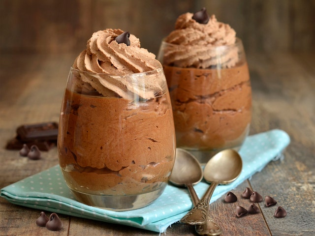

(“Un placer que derrite el estrés”).
• Porciones: 4.
• Tiempo: 25 min + 1 h frío.
• Dificultad: muy fácil.
-200 g chocolate negro.
-300 ml crema para batir (nata) bien fría.
-2 cucharadas azúcar o al gusto.
(breve):
1. Derrite el chocolate y deja templar un poco.
2. Monta la crema con azúcar hasta picos suaves.
3. Incorpora 1/3 de la crema al chocolate para aligerar; luego mezcla lo restante con movimientos envolventes.
4. Refrigera 1–2 h.
Tips & presentación: sirve con virutas de chocolate o
frambuesas.
Foto sugerida: copa con mousse y textura
esponjosa.
“Cada ingrediente tiene su momento y lugar; el secreto está en saber cuándo y cómo utilizarlo” - Pedro Subijana.
